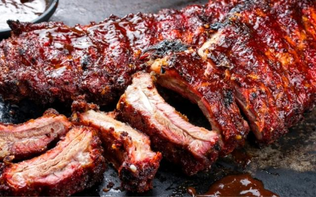

Costela ao molho barbecue

Descrição
Costelinha com molho barbecue é uma deliciosa opção de prato, popularmente conhecida como "ribs" ou costelas de porco ao molho barbecue.
Ingredientes
- 2kg costelinhas de porco
- 1 colher(sopa) óleo
- 1/2 xícara (chá) açúcar mascavo
- 2 colheres (sopa) molho inglês
- 1 folha de louro
- 1/2 xícara de água
- Pimenta do reino a gosto
- 2 colheres (sopa) cebola picada
- 1/2 xícara (chá) de vinagre branco
- 2 xícaras (chá) ketchup
- 1 colher (sopa) de chilli em pó
- Sal a gosto
Modo de Preparo
- Espalhe sal por toda a carne e coloque para ferver por 10 minutos em um panela com bastante água quente.
- Escorra a água, arrume as costelinhas em uma assadeira, cubra com papel alumínio e leve ao forno baixo ( 180º) por 40 minutos.
- Em uma panela, refogue a cebola no óleo, acrescente o açúcar mascavo e o vinagre e deixe o açúcar dissolver.
- Acrescente o molho inglês, o catchup, o louro, o chilli em pó e a água e cozinhe por 30 minutos em fogo baixo ou até o molho engrossar.
- Tempere com sal e pimenta-do-reino, coe e reserve.
- Após os 40 minutos retire as costelinhas do forno, retire o papel alumínio e pincele com o molho.
- Aumente a temperatura do forno, asse as costelinhas por mais 10 minutos, pincele novamente com o molho, asse mais 5 minutos e repita mais uma vez esta operação.
- Sirva com mais molho à parte.
Voltar para a HOME